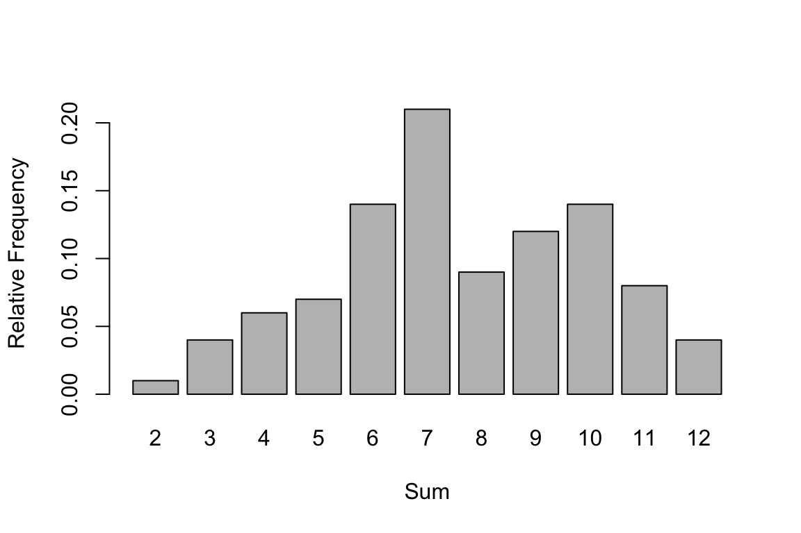
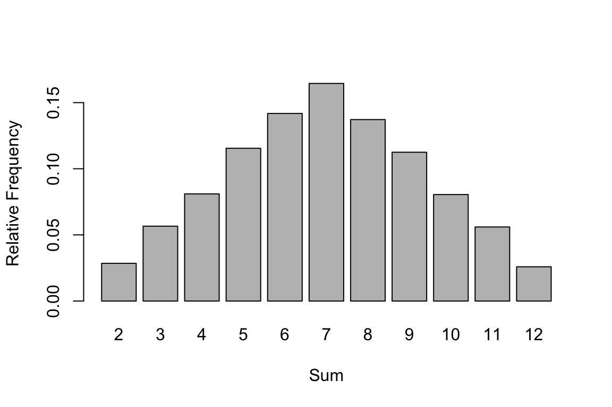

set.seed(123)Sampling and Simulation
Sampling
We can obtain a random sample from existing elements in a dataset, vector, or list using the sample() function in R
The basic syntax for the sample() function is as follows:
sample(x,size,replace = FALSE, prob = NULL)
-
x: object we are sampling from, most often a vector or dataset -
size: size of the sample -
replace: should sampling be with replacement? (FALSE by default) -
prob: A vector of probability weights for obtaining the elements of the vector being sampled (NULL by default, every element is equally likely to be drawn)
For more details on the sample function run ?sample in the console
In order to replicate the following examples and get similar results, we can use set.seed()
Suppose we have a vector with 10 elements in it
vec <- 1:10To generate a random sample of five elements from our vector vec, we run the following command
sample(vec,size = 5)#> [1] 3 10 2 8 6Recall, the default setting for sampling is without replacement. This means once we draw the number (or element) from our vector we can not draw it again, similar to the lottery method.
It is also important to note that each time we run the command sample() it may generate a different set of elements each time
sample(vec,size = 5)#> [1] 5 4 6 8 1We can also sample random elements from our vector using the argument replace=TRUE so that we are sampling with replacement. That is, each time we draw an element we put it back into our vector and there may be a chance we draw it again. So each element in the vector can be chosen to be in the random sample more than once
sample(vec,size=5,replace = TRUE)#> [1] 10 5 3 9 9sample() can be applied not only to numerical vectors, but other types of vectors such as character or logical.
For example, consider the character vector with the following names from our class. No one is volunteering so I randomly choose a set of three people in the class
students <- c('Leslie', 'Ron', 'Andy', 'April', 'Tom', 'Ben', 'Jerry')sample(students, 3)#> [1] "Leslie" "Tom" "Andy"In this scenario sampling with replacement (i.e replace = TRUE) would not be appropriate
One important application for sampling is splitting up our dataset into two sets: one for training and one for testing an algorithm.
We will consider the penguins dataset from the palmerpenguins library
dat <- palmerpenguins::penguinsnrow(dat)#> [1] 344In order to sample random rows from a dataset you first have to create a vector from 1:nrow(data), these will be the indices we will sample from
row_indices <- 1:nrow(dat)Our training set will consist of 80% of the dataset and testing set will consist of the remaining 20%
Interpretation: randomly select 80% (approx. 275) rows from 1:344
train_sampled_rows[1:10]#> [1] 328 26 7 137 254 211 78 81 43 332training_set <- dat[train_sampled_rows,]
dim(training_set)#> [1] 275 8lastly, we use the remaining rows for our testing set
test_set <- dat[-train_sampled_rows, ]
dim(test_set)#> [1] 69 8Simulation
Let start with a simple example by simulating a fair dice roll
sample(1:6,size=1)#> [1] 2since we are only drawing once, it doesn’t matter if you sample with or without replacement
Now, consider rolling two fair, six-sided dice and computing their sum. One approach to compute this would be
An easier way:
roll_two_dice <- sample(1:6,size = 2,replace = TRUE)sum(roll_two_dice)#> [1] 10We are drawing two numbers from the range 1 through 6 with replacement. We sample with replacement because the roll of each dice is independent and it’s possible to roll (or draw) the same number twice. If we were to use replace=FALSE once we draw, say 1, we could not draw 1 again for the second dice.
From the above examples, it is straightforward to carry out a simple random experiment. What if we wanted to repeat these experiment multiple times? For example, we wanted to repeat the experiment of drawing two dice and calculating their sum 100 or even 1000 times. For such scenarios we can utilize the replicate() function in R.
replicate() implements common tasks involving for loops without explicitly having to use looping syntax.
The basic syntax for the replicate() function is as follows:
replicate(n,expr, simplify = 'array')
n: number of replications. How many times do you want to replicate the experimentexpr: the expression to evaluate repeatedlysimplify: how the output should be returned. The default is anarray. Ifsimplify=FALSE, the output will be a list ofnelements
Let’s start by simulating sampling 3 different numbers from ranges 1 to 20 at random without replacement, 10 times.
Breaking it down, first we create our expression (or experiment)
then replicate this experiment 10 times
#> [,1] [,2] [,3] [,4] [,5] [,6] [,7] [,8] [,9] [,10]
#> [1,] 16 7 15 10 8 6 18 1 4 11
#> [2,] 12 19 10 2 14 7 13 7 18 15
#> [3,] 8 15 7 13 7 18 5 18 19 1The default output of replicate() will be an array with n columns, the rows will depend on the length of the output from the experiment. For example, we are sampling 3 numbers from 1-20 so we will have three rows, each column will then correspond to a replicate of the experiment. So in the first replicate we drew the numbers (16,12,8). In the second replicate we drew the numbers (7,19,15), and similar interpretations hold for the remaining columns (replicates)
Going back to our example of calculating the sum of rolling two fair dice. We will replicate this experiment n times
We will use replicate as follows: 1. Write a function that performs the experiment once 2. Replicate the experiment using replicate() many times
Creating a function
We can create a function that will calculate the sum of rolling two fair dice as follows
The sum of rolling two fair dice once was
sum_dice_roll()#> [1] 6Replicate experiment multiple times
Let’s start by calculating the sum of rolling two fair dice 20 times
replicate(n = 20,
expr = sum_dice_roll() )#> [1] 5 11 2 6 3 7 8 9 9 4 4 4 8 10 8 7 5 8 8 4replicating our experiment 100 times
rep100 <- replicate(n = 100,
expr = sum_dice_roll())If we were to repeat this experiment many times, what is the sum that will most likely occur in the long run ?
Looking at our experiment replicated 100 times we obtain the following relative frequency of every outcome. Note the possible outcomes are (2,3,4,…12)
prop.table( table(rep100) ) #> rep100
#> 2 3 4 5 6 7 8 9 10 11 12
#> 0.01 0.04 0.06 0.07 0.14 0.21 0.09 0.12 0.14 0.08 0.04barplot( prop.table(table(rep100)),
xlab = 'Sum', ylab = 'Relative Frequency')
Replicating our experiments many more times, say 10,000 times, we will obtain more stable results which comes from the idea of “long-run” behavior. According to the law of large numbers, if we repeat an experiment independently a large number of times and average the result, we should obtain a value which is close to the actual expected value.
rep10000 <- replicate(n = 10000,
expr = sum_dice_roll())prop.table( table(rep10000) ) #> rep10000
#> 2 3 4 5 6 7 8 9 10 11 12
#> 0.0285 0.0566 0.0810 0.1155 0.1418 0.1645 0.1372 0.1125 0.0805 0.0560 0.0259barplot( prop.table(table(rep10000)),
xlab = 'Sum', ylab = 'Relative Frequency')
Depending on the context of the problem 10,000 may not be considered large, but for the given dice roll experiment 10,000 is enough. The more replicates you perform the longer time it will take to run on your computer.